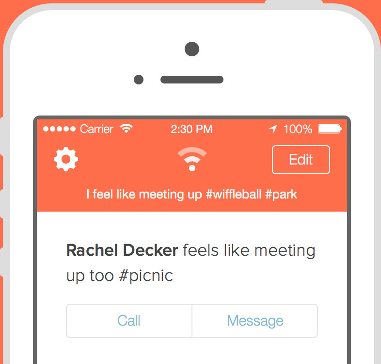

Product Designer *
Development teams tend to think of time only in terms of how long it takes to build something, but it’s not just about you! Understanding how much time users have for your product is instrumental to it's adoption.
Sometimes we send group messages with the hope of making a group decision, while other times we're attempting to elicit a response from every person in the group. Here's how Snapchat has mastered the latter.
A designer's work goes way beyond pretty mockups. It's their job to make sure everything comes together and feels just right. They're not so much creators as they are tweakers.
You can learn much more by eliciting questions than you can from asking them. Observe users in their natural exploration process to get what you really need from usability testing.
Large software applications can quickly grow out of hand. To avoid creating feature-rich products that are difficult to use, it's just as important to remove features as it is to add them.
In comics, it's what isn't on the page that glues the story together. Is there a way for designers to use everyday web design to accomplish the same effect on the web?
It's easy to get excited about something you've worked so hard on and talk about its features and how it stacks up to the competition. Those are important to communicate, but not before letting your potential customers know you truly understand their need.
This is my first attempt at designing with Sketch. It's a design tool made for creating assets for the modern web, and a fast one at that. But I've learned from experience that mastering a design tool is not a skill that always leads to great design.
Every website tells a story and in some ways I feel like a movie director. When designing for the web, I think about how I want a user to feel as they progress through a website. There are times I want them to be entertained, adventurous, attentive or feel the need to take action.
My thoughts on the future of the web. Every day I see something amazing in web design that I've never seen before. With so much happening so fast, it's easy to forget how people consume information.
Designing an interface is hard. It can be difficult to account for all use cases without ever loosing sight of why we're really creating something (to make the lives of others better) without a few guiding principals.
Making plans with friends usually requires a lot of work just to see who's interested in hanging out. So I devised a way to easily know when your friends feel like meeting up, called Chill. Currently in development for iOS, I hope you and I can Chill sometime!
I do whatever it takes to make useful products people use. This includes idea validation, interaction and visual design, copywriting, user testing, product positioning, and user adoption. My design philosophy is simple: get the job done, then get the hell out of the way.
Social Inbox
I design HubSpot's social publishing and monitoring tool, Social Inbox, to meet the needs of today's small business marketer. The screenshot below is of the new compose feature, which was designed to share content differently across different social networks.